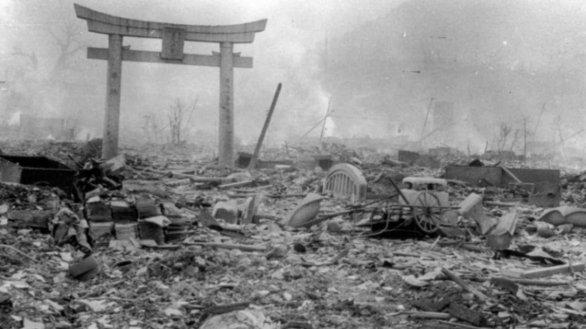

General knowledge
World War II was the biggest and deadliest war in history,
involving more than 30 countries.
Sparked by the 1939 Nazi invasion of Poland, the war dragged on for six bloody years
until the Allies defeated the Axis powers of Nazi Germany, Japan and Italy in 1945
history
World War II (1939-1945) was a global conflict involving many of the world's nations. It started when Nazi Germany, led by Adolf Hitler, invaded Poland on September 1, 1939, prompting Britain and France to declare war on Germany. Over time, the war expanded with Germany forming alliances with Italy and Japan, while the Allies, including the United States, the Soviet Union, and the United Kingdom, fought against them.
The war saw large battles across Europe, Africa, and the Pacific. Germany's defeat came in 1945, after the Allies invaded France and the Soviet Union pushed into Germany. In the Pacific, Japan continued its aggression until the U.S. dropped atomic bombs on Hiroshima and Nagasaki in August 1945, leading to Japan's surrender.
Timeline of The war
| years | event |
|---|---|
| 1939 | Nazi Germany invade Poland |
| 1940 | Nazi Germany invasion of France,Denmark and Norway |
| 1941 | Japan suprise attack on America & Nazi Germany declare war on America |
| 1942 | Germany invasion of USSR and the African campaign |
| 1943 | America Pacific campaign and invasion of italy |
| 1944 | the Allies invasion of Germany |
| 1945 | the Allies victory on Europe and end of the Pacific campaign |
Impact
The war caused immense destruction, with an estimated 70-85 million deaths, including the Holocaust, in which six million Jews were killed. World War II ended in 1945, reshaping the world order and leading to the creation of the United Nations. It also set the stage for the Cold War between the U.S. and the Soviet Union.
Facts
- Start and End: World War II began on September 1, 1939, when Germany invaded Poland, and ended on September 2, 1945, when Japan surrendered
- Holocaust: During the war, Nazi Germany killed about six million Jews and millions of others in the Holocaust.
- D-Day: On June 6, 1944, Allied forces launched the D-Day invasion in Normandy, France, to begin freeing Western Europe from Nazi control.
- Atomic Bombs: The U.S. dropped two atomic bombs on Japan in 1945, on Hiroshima and Nagasaki, which led to Japan’s surrender.
- Biggest Battle: The Battle of Stalingrad (1942-1943) was a turning point in the war, where the Soviet Union defeated Germany, starting their push back to Berlin.